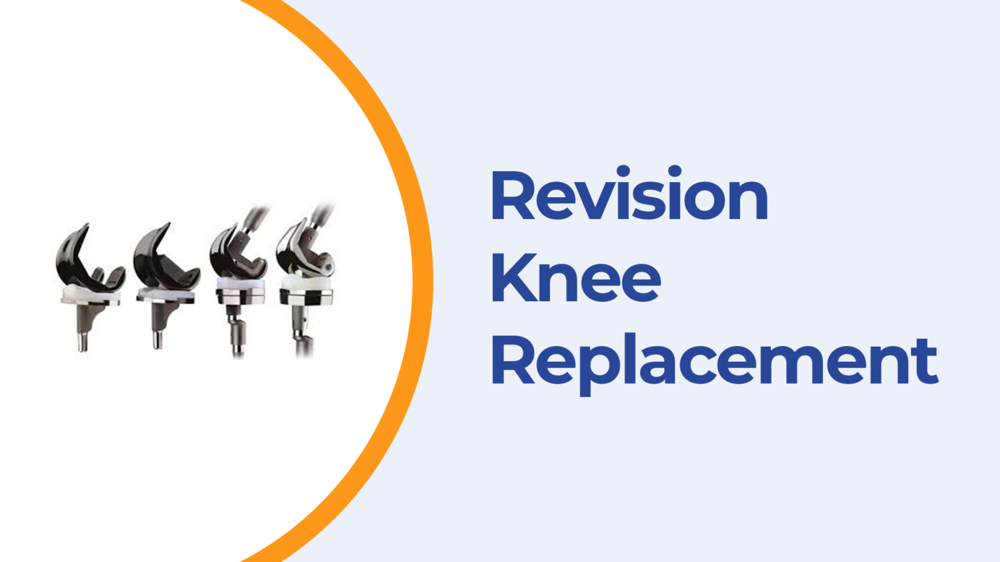

Book your appointment through WhatsApp or by dialing up @Mobile Number.
The doctor inspects your issue extensively to completely understand the cause and the issues associated with your ailment.
A detailed treatment plan is created based on your unique needs and requirements.
With each treatment that you undergo, you are advancing towards recovery.
Our team follows up to keep track of your recovery progress.
When a knee replacement no longer functions properly, revision surgery after total knee replacement is often necessary. During this procedure, a surgeon replaces the old device with a new one. Revision surgery should not be taken lightly. It’s more complicated than a primary (or first) Total Knee Replacement Surgery and continues to carry many of the same risks.
You will experience specific symptoms if Knee Replacement Revision Surgery is required. Excessive wear or failure symptoms include:
In other situations, small fragments of the prosthetic device may break off and gather near the joint.
Infection after Knee Replacement Surgery can result in serious complications. Typically, bacteria that gather near the wound or inside the device are the reason for this. If your surgeon suspects there may be an issue with your present artificial knee, you will be required to submit to an examination and assessment. However, the following are the typical justifications for having a second Knee Replacement Surgery:
A revision procedure is typically more challenging and complex than the primary Knee Replacement Surgery because the surgeon must eliminate the original implant, which would have been embraced into the existing bone.
Additionally, less bone is left over after the surgeon removes the prosthesis. In some instances, a bone graft may be necessary to support the new prosthesis. This procedure involves transplanting a piece of bone from another part of the body or from a donor. A bone graft provides support and promotes the growth of new bone.
However, more preoperative planning, specialised equipment, and advanced surgical techniques are needed for the procedure. Compared to a primary, initial knee replacement, the procedure requires more time to complete.
The recovery period following Knee Revision Surgery is not as predetermined as it is after primary knee replacement and can differ greatly from patient to patient. It may take up to 12 months to feel completely better.
The recovery period usually takes up to 3 months or even more, depending on the patient’s condition. Most people will feel at ease going back to work and resuming some of their normal activities three to six months after surgery. However, this may not involve exercise or other physically demanding activities.
The lengthened recovery time associated with a Knee Revision Surgery raises the possibility of complications.
Complications after Knee Revision Surgery may include:
Your orthopaedic surgeon will go through all the risks in detail to map out the best course of action. They will also give you instructions on how to get ready for surgery to reduce your risks as much as possible.
The procedure takes 1 to 3 hours.
It will take up to 5-6 weeks to resume usual activity and 3-4 months to recover fully from the knee replacement surgery.
Designed by Snaptics